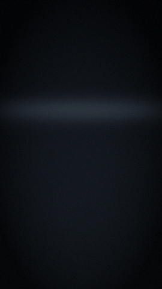

Perception and memory
This chapter covers the ambient loop: what DreamLayer hears and sees, what it keeps, and every path by which a memory comes back — asked for or unasked. All of it runs behind the Privacy Veil gate, and everything here works without the cloud.
Live captions and the conversation ledger
Every transcribed line flows through ingest_caption(text, speaker) into the
ConversationLedger (orchestrator/conversation.py) — a bounded ledger of
2,000 utterances with speaker and timestamp. While captions are on, each line
also flashes at the rim as a SpokenCaptionCard; set_captions(False)
hides the display but keeps the ledger. Focus mode hides captions the same
way. The Veil stops both.

Seam: the microphone and on-device ASR that produce the text, plus
optional speaker diarization for the speaker label.
One ledger, four products:
- Recall —
recall_conversation(topic, person=None)answers "what did they say about X". User-initiated, so it is not veil-gated: you can always ask about what was already lawfully kept. - Rewind —
rewind_day()groups today into hour blocks with people and sample lines. - Dossier —
greet(person)surfaces a PersonDossierCard: last seen, recurring topics between you, their most recent line. Veil-gated (proactive), earconlook. - Learning — your own lines feed the user model and the commitment parser; other speakers only increment "who you talk with".
Spoken commitments
Your own lines run through parse_commitment: a first-person promise cue
("I'll...", "I will...", "I promise to...", "let me...") plus an optional due
phrase (by Friday, tomorrow, tonight, end of day...). "I'll send you the
lease by Friday" becomes a tracked commitment attributed to whoever you are
talking to, confirmed with a CommitmentRecallCard, and from there feeds
the dossier, anticipation, attention ("you owe Marcus..."), commitment
drift, and the quest engine.
Look at someone — the Social Lens
look_at_person(frame) matches a face against your own contacts only —
an on-device index of people you were introduced to and chose to keep. On a
match it shows the identity card, and if the ledger knows them, follows with
the conversation dossier.
The invariants are architectural, not policy:
- No stranger lookup. There is no public database and no cloud face search anywhere in the codebase. The index contains only contacts you enrolled.
- Consent-first name capture. A name is offered only from a closed, offline grammar of self-introductions — explicit forms ("my name is...", "call me...") taken as given, soft forms ("I'm Maya") only when the next token is capitalized. The offer expires after 12 seconds; nothing is saved until a deliberate confirm; the Veil closes the ear entirely.
- Contacts sync from the Brain can enroll faces via
load_contact_faces(contacts, face_embed_fn).
Seam: the camera frame and the 512-dimension face-embedding model (MobileFaceNet-class, on the NPU).
Ask and receive — object and commitment recall
ask(query) classifies the question and answers from memory: object recall
("where did I leave my keys?") renders the spatial ObjectRecallCard;
commitment recall ("what does Marcus owe me?") renders the chain. Every
recall card is stamped with an origin_deg — the angle of the day the
memory came from — so it condenses from the time it happened on the
Horizon. Below threshold, DreamLayer says "Not sure" rather than guessing.
Scenes are kept through ingest_scene (object, place, time; embedded and
stored in the vault), conversations through ingest_conversation; both
confirm with the SavedMemoryCard. A passive ring buffer (SilentCapture +
PassiveEventInjector) holds the ambient stream so that a later question
can still reach a moment you never explicitly saved. Seam: the camera and
microphone frames that feed it.
Anticipation — the proactive cards
anticipate_tick(Context) ties place, time, and person into ranked, deduped,
veil-gated cues (orchestrator/anticipation.py). Three cue kinds, each
individually mutable from the phone (set_cue):
| Kind | Trigger | Card | Priority |
|---|---|---|---|
event |
an agenda event within 15 minutes | UpcomingCard "leave in 8 min" | 3 |
person |
someone you know in view | PersonContextCard (with the owed task as the why-line) | 2 |
place |
arriving where an anchor lives | HereCard "your bike is here" | 1 |
A 300-second per-key cooldown stops repeats; Focus holds all of it; the Veil
stops it entirely. Arriving somewhere that holds a memory also fires
on_place and the ProactiveMemoryCard:
Message pop-ups
poll_messages_once(http_get) / start_message_polling(interval=8.0) fetch
the Brain's Messages and Mail feed and flash genuinely new incoming items —
idempotent by timestamp, per-channel toggles for texts and emails, long
emails pre-summarized by the Brain when that switch is on. Veil- and
focus-gated. Seams: the macOS readers behind the feed, and http_get
itself (default urllib; swap per platform).
Rewind — scrubbing the day
Two synchronized views of the same day:
- On glass:
rewind_scrub()loads today into the time-scrub engine and shows the newest node;scrub("back"|"forward")walks moment by moment, each rendered as a TimeScrubNodeCard. Seam: the twist or tap gesture driving the scrub. - On the phone: the Rewind screen lists the same hour blocks from
GET /dreamlayer/rewind— activity, messages, and events merged.
The morning brief
The Brain composes the brief — upcoming events, missed messages, open
commitments, rewritten into two warm sentences when a model is available —
on a schedule you set (the panel's "Morning brief" hour). The moment the Halo
goes on, orchestrator.wake() fetches the latest brief
(GET /dreamlayer/brief/latest) and shows it as a MorningBriefCard.
Silent when there is no brief or no paired Brain; veil-gated. The phone's Now
tab polls the same endpoint and pushes a local notification when a new brief
lands. Seam: the glasses' wear/wake signal.
Keeping and forgetting
Saving is celebrated once (SavedMemoryCard, the system's only particle burst); forgetting is instant and confirmed (ForgetLastCard). Deeper retention — what consolidates overnight, what fades — belongs to REM and the memory vault, covered in the wider lens set.